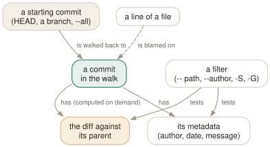

Day 06
Reading history
log is a query language over the commit graph; blame and the pickaxe answer who, when and why.
By the end of today you can
- narrow
git logto exactly the commits that matter, by path, author, date or content - find the commit that introduced or removed a string with
-S, and follow one function's history with-L - get past reformatting and file moves in
git blameto the commit that actually wrote a line
log is a walk plus a filter
git log is not a list of what happened. It starts from one or more commits (HEAD, by default), walks back through parents, and prints the commits that pass whatever filters you gave it. Learning log is learning the filters — and a handful of them answer almost every question you will ever ask of a history.
Start with the picture. --oneline gives one line per commit, --graph draws the parent links, and --all starts from every ref instead of only HEAD:
$ git log --oneline --graph --all
* f556cdd (HEAD -> main) Merge branch 'slow'
|\
| * 6ad2702 (slow) Raise timeout to 60
* | ef89957 Lower timeout to 10
|/
* 1e379e1 Merge branch 'feat2'
Then the diff views. -p shows each commit's patch, --stat the files and line counts. Neither diff is stored anywhere: git computes it by comparing the commit's tree with its parent's, on the spot. git show <commit> is the same thing for one commit.

git log walks back from a starting commit and keeps the commits whose metadata or diff against their parent pass the filter — which is why the pickaxe and path filters cost time on large histories: those diffs are computed during the walk, because none are stored (Day 1). Blame runs the same walk in the other direction, per line.Narrowing by who, when and where
--author=Bo- A regex against the author line.
--committerfor the other one. --since=2026-09-15- From a date. Also
--until, and relative forms like--since='2 weeks ago'. --grep=timeout- A regex against the commit message.
-- lib/- Only commits that changed something under the path.
$ git log --oneline --author=Bo
cc12673 Retry five times
$ git log --oneline --since=2026-09-15
01e8bee Four is enough
b846fc8 Move helpers into lib/
Filters combine with “and”. Path filters come last, after --, which tells git that everything after it is a path, not a branch or a commit.
$ git log --oneline -- lib/helpers.py
01e8bee Four is enough
b846fc8 Move helpers into lib/
$ git log --oneline --follow -- lib/helpers.py
01e8bee Four is enough
b846fc8 Move helpers into lib/
cc12673 Retry five times
4a2587c Add util helpers
--follow detects the rename during the walk and keeps going under the old name. It works for a single file only.
The pickaxe: find the commit that changed a string
The most useful history question is “when did this appear, and why?” -S<string> answers it: it keeps commits where the number of occurrences of the string changed — the ones that introduced or removed it. -G<regex> is the looser cousin: commits whose diff adds or removes a line matching the regex.
$ git log --oneline -S'attempts=5'
01e8bee Four is enough
cc12673 Retry five times
$ git log --oneline -G'attempts=[0-9]'
01e8bee Four is enough
cc12673 Retry five times
4a2587c Add util helpers
Add -p to see the diffs, and narrow with a path to make it fast. For one function, -L is better still: it follows a line range, or a function found by name, through every commit that changed it — renames included:
$ git log --oneline -L :retry:lib/helpers.py
01e8bee Four is enough
@@ -4,6 +4,6 @@
-def retry(fn, attempts=5):
+def retry(fn, attempts=4):
...
cc12673 Retry five times
--- a/util.py
+++ b/util.py
-def retry(fn, attempts=3):
+def retry(fn, attempts=5):
...
blame, and seeing past the noise
git blame annotates each line with the last commit that changed it. A leading ^ marks a line that has not changed since the commit where blame stopped — here, the root. It follows renames on its own:
$ git blame lib/helpers.py
^4a2587c util.py (Ada Example 2026-08-01 10:00:00 +0200 1) def parse(line):
01e8bee7 lib/helpers.py (Ada Example 2026-09-25 09:00:00 +0200 4) def retry(fn, attempts=4):
^4a2587c util.py (Ada Example 2026-08-01 10:00:00 +0200 5) for _ in range(attempts):
Two kinds of commit make blame lie. A re-indent touches every line and takes the blame for all of them; -w ignores whitespace and looks through it:
$ git blame -L2,2 lib/helpers.py
ea8b0c84 (Reformat Bot 2026-09-25 09:00:00 +0200 2) return line.split(",")
$ git blame -w -L2,2 lib/helpers.py
^4a2587c util.py (Ada Example 2026-08-01 10:00:00 +0200 2) return line.split(",")
And moving code between files makes the mover its author; -C looks for the lines in other files changed by the same commit:
$ git blame lib/retry.py | head -2
84e52de5 (Bo Other 2026-09-25 09:00:00 +0200 1) def retry(fn, attempts=4):
84e52de5 (Bo Other 2026-09-25 09:00:00 +0200 2) for _ in range(attempts):
$ git blame -C lib/retry.py | head -2
01e8bee7 lib/helpers.py (Ada Example 2026-09-25 09:00:00 +0200 1) def retry(fn, attempts=4):
^4a2587c util.py (Ada Example 2026-08-01 10:00:00 +0200 2) for _ in range(attempts):
Diffs that show moves as moves
The same problem appears in git show and git diff: a moved block looks like a deletion in one place and an unrelated addition in another. diff.colorMoved gives moved lines their own colours (bold magenta and cyan in a default terminal, instead of red and green), so the eye skips them and lands on what actually changed. diff.colorMovedWS set to allow-indentation-change keeps recognising the block when it was also re-indented — moving a function into a class, say.
Today's habit
Before asking why a line exists, ask git: git log -S for a string, git log -L for a function, git blame -w -C for a line. The commit message is usually there, and it was written by someone who knew.
Tomorrow: the syntax behind HEAD~1, main..feature and :1:file — the small language every command on this page accepts.
New vocabulary
Commands
| Command | Does |
|---|---|
git log --oneline --graph --all | Draw every branch's history, one line per commit. |
git log -p | Show each commit's diff against its parent. |
git log --stat | Show which files each commit touched, and how much. |
git log --author=<re> --since=<date> | Keep only commits whose author matches, from a date onwards. |
git log -- <path> | Keep only commits that changed the path. The -- separates paths from revisions. |
git log --follow -- <file> | Follow one file's history back through renames. |
git log -S<string> | Pickaxe: keep commits that change how many times the string occurs. |
git log -G<regex> | Keep commits whose diff adds or removes a line matching the regex. |
git log -L :<func>:<file> | Show the history of one function (or -L 10,20:file for a line range). |
git show <commit> | Show one commit: message and diff. |
git blame -w -C <file> | Annotate each line with its last commit, ignoring whitespace and seeing moves between files. |
Options
| Option | Does |
|---|---|
diff.colorMoved / diff.colorMovedWS | Colour moved blocks differently from added and removed ones; allow-indentation-change still recognises a re-indented move. |
Today's configappend to ~/.gitconfig
In a diff, a block that was moved is shown in its own colours instead of as an unrelated deletion and addition, so a refactor that moves code around reads as a move and the real edits stand out. Re-indented moves count too.
[diff]
colorMoved = default
colorMovedWS = allow-indentation-change
git reads its config afresh on every command, so there is nothing to reload. Check what is in force, and which file it came from, with git config list --show-origin.
Drillsdo these in a real terminal, today
Self-check
Answer out loud first, then unfold.
git log -- lib/helpers.py shows two commits, but you know the code is a year old. Where did the rest go?
The file was renamed, and a path filter matches paths, not files. Before the rename, commits touched util.py, which does not match. git records no renames (Day 1: a tree lists names and blobs, nothing more), so --follow asks log to detect them as it walks, comparing each commit's tree with its parent's.
--follow works for exactly one file. For a directory that moved, give both paths: git log -- lib/ util.py.
git log -S'attempts=5' lists two commits: the one that set it to 5 and the one that set it to 4. Why the second?
-S keeps commits that change the number of occurrences of the string. The second commit removed the only occurrence, so the count went from one to zero. That is usually what you want — introduced and removed — but it means a commit that only moves the string, leaving the count unchanged, is invisible to -S. -G is the regex alternative that matches any added or removed line, moves included.
git blame says every line of a function was written by “Reformat Bot” last week. How do you see who actually wrote the code?
git blame -w ignores whitespace when deciding whether a line changed, so a pure re-indent is looked through and the line is attributed to the commit before. If the bot did more than whitespace — reformatting quotes, reflowing — list its commits in a file and pass it with --ignore-revs-file. Both are ways of telling blame which history is not interesting.
You moved a small helper from one file to another. git blame -C on the new file still shows every line as yours. Doesn't -C detect moves?
It does, above a threshold: git-blame(1) says -C needs at least 40 alphanumeric characters of moved text to associate lines with another file, by default. A two-line helper can fall under it. -C<num> lowers the threshold; -C -C and -C -C -C widen the search — to the commit that created the file, then to any commit — at a cost in time.
Cheat sheet
git log --oneline --graph --all # the whole picture
git log -p / --stat # with diffs / with file summaries
git log --author=RE --since=DATE # who, when
git log --follow -- FILE # one file, through renames
git log -S'STRING' -p # commits that add or remove STRING
git log -G'REGEX' # commits whose diff lines match
git log -L :FUNC:FILE # one function's whole life
git show COMMIT # one commit, message + diff
git blame -w -C FILE # authors, past re-indents and moves
Everything through Day 06
Commands
| Command | Does |
|---|---|
git init -b main | Create an empty repository whose first branch is main. |
git hash-object <file> | Print the object name the file's contents would get. Writes nothing without -w. |
git cat-file -t <object> | Print an object's type: blob, tree, commit or tag. |
git cat-file -p <object> | Pretty-print an object's contents. The one command that shows what git really stores. |
git cat-file -s <object> | Print an object's size in bytes. |
git ls-tree -r <tree-ish> | List every blob in a tree, recursively, with mode and hash. |
git rev-parse HEAD | Turn a name into the full hash it currently means. |
git count-objects -v | Count loose and packed objects and the disk they use. |
git status -s | Show each changed path with two columns: index vs HEAD, then working tree vs index. |
git add <path> | Copy the file's current contents into the index. Writes the blob immediately. |
git add -p | Walk through each hunk and choose which ones go into the index. |
git diff | Show what differs between the index and the working tree — what add would stage. |
git diff --staged | Show what differs between HEAD and the index — what commit would record. |
git restore <path> | Overwrite the working-tree file with the index version. Discards unstaged edits. |
git restore --staged <path> | Reset the index entry to HEAD's version. The working tree is untouched. |
git commit [-a] | Turn the index into a tree, wrap it in a commit, move the branch to it. -a first stages every modified tracked file (never untracked ones). |
git rm --cached <path> | Remove a path from the index only; the file stays on disk, now untracked. |
git branch | List local branches; * marks the one HEAD names. |
git branch -v | List branches with the commit each points at and its subject line. |
git branch <name> | Create a branch at HEAD without switching to it. |
git switch <branch> | Point HEAD at a branch and update the index and working tree to its commit. |
git switch -c <name> | Create a branch at HEAD and switch to it in one step. |
git switch - | Switch back to the branch you were on before. |
git switch --detach <commit> | Point HEAD directly at a commit, with no branch in between. |
git branch -d <name> | Delete a branch, refusing unless it is merged into its upstream (or into HEAD, if it has none). |
git branch -D <name> | Delete a branch unconditionally. |
git branch -m <old> <new> | Rename a branch. |
git merge <branch> | Bring the branch's history into the current one: fast-forward if possible, else a merge commit. |
git merge --ff-only <branch> | Merge only if it is a fast-forward; otherwise refuse and change nothing. |
git merge --no-ff <branch> | Always create a merge commit, even when a fast-forward was possible. |
git merge --abort | Give up a conflicted merge and restore the state before it started. |
git merge-base A B | Print the best common ancestor of two commits — the version a merge compares against. |
git ls-files -u | List the unmerged index entries: one line per stage per conflicted path. |
git show :1:<path> | Show the base version of a conflicted file. :2: is yours, :3: theirs. |
git checkout --conflict=merge <path> | Recreate the conflict markers in a file you mangled; =zdiff3 works too. |
git clone <url> | Copy a repository: all objects, its branches as origin/*, and one local branch checked out. |
git remote -v | List remotes with their fetch and push URLs. |
git remote add <name> <url> | Register another repository under a short name. |
git fetch | Download new objects and move the remote-tracking refs. Never touches your branches or files. |
git pull | Fetch, then integrate the upstream into the current branch. |
git push | Send the current branch's commits and move the branch of the same name on the remote. |
git push -u origin <branch> | Push and record origin/<branch> as this branch's upstream. |
git push origin --delete <branch> | Delete a branch on the remote. |
git branch -vv | List branches with their upstream and ahead/behind counts. |
git log --oneline --graph --all | Draw every branch's history, one line per commit. |
git log -p | Show each commit's diff against its parent. |
git log --stat | Show which files each commit touched, and how much. |
git log --author=<re> --since=<date> | Keep only commits whose author matches, from a date onwards. |
git log -- <path> | Keep only commits that changed the path. The -- separates paths from revisions. |
git log --follow -- <file> | Follow one file's history back through renames. |
git log -S<string> | Pickaxe: keep commits that change how many times the string occurs. |
git log -G<regex> | Keep commits whose diff adds or removes a line matching the regex. |
git log -L :<func>:<file> | Show the history of one function (or -L 10,20:file for a line range). |
git show <commit> | Show one commit: message and diff. |
git blame -w -C <file> | Annotate each line with its last commit, ignoring whitespace and seeing moves between files. |
Options
| Option | Does |
|---|---|
user.name / user.email | Set the identity written into every commit's author and committer lines. |
init.defaultBranch | Name the first branch of every new repository. |
commit.verbose | Show the staged diff below the message in the commit editor. |
branch.sort | Set the default order of git branch; -committerdate puts recent work first. |
merge.conflictStyle | Choose the marker style: merge (default), diff3 or zdiff3. |
pull.ff | only: let git pull fast-forward and refuse anything else. |
push.autoSetupRemote | Make a plain git push of a new branch create it upstream and track it. |
fetch.prune | Delete remote-tracking refs whose branch was deleted on the remote, on every fetch. |
diff.colorMoved / diff.colorMovedWS | Colour moved blocks differently from added and removed ones; allow-indentation-change still recognises a re-indented move. |